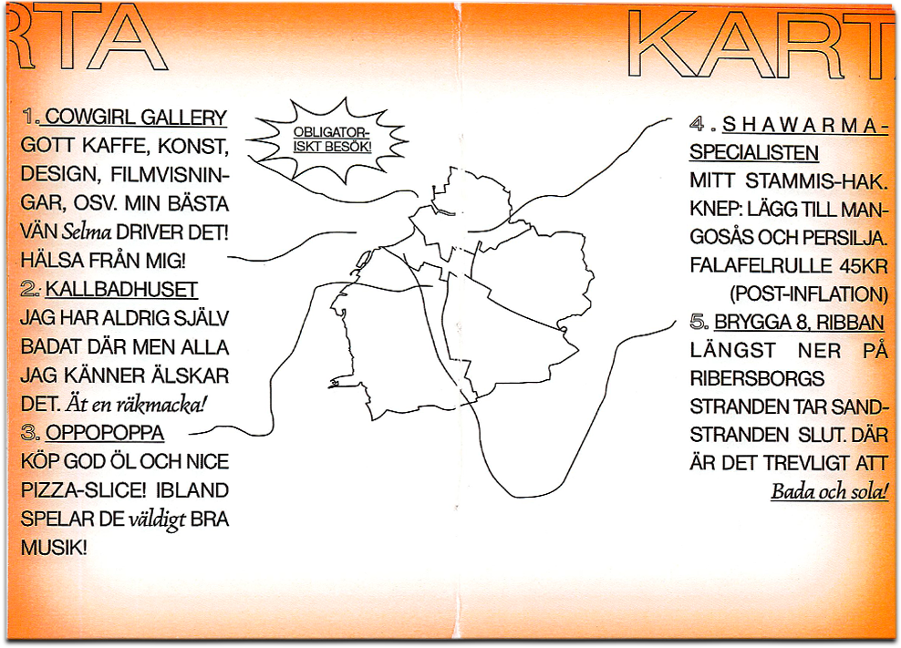
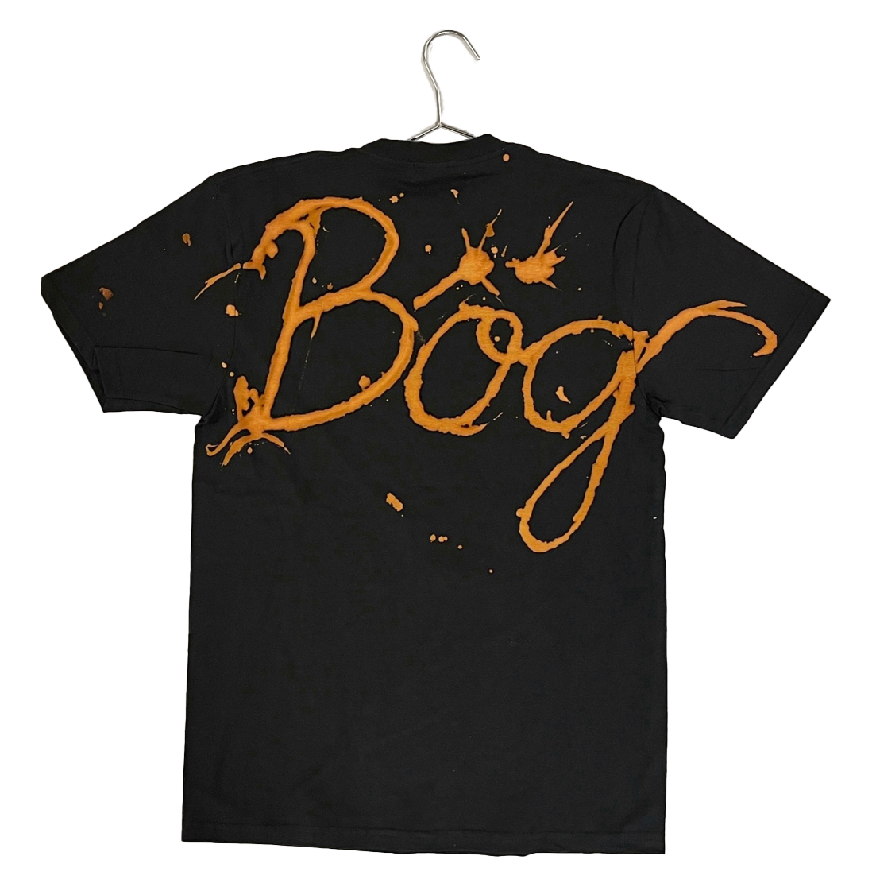
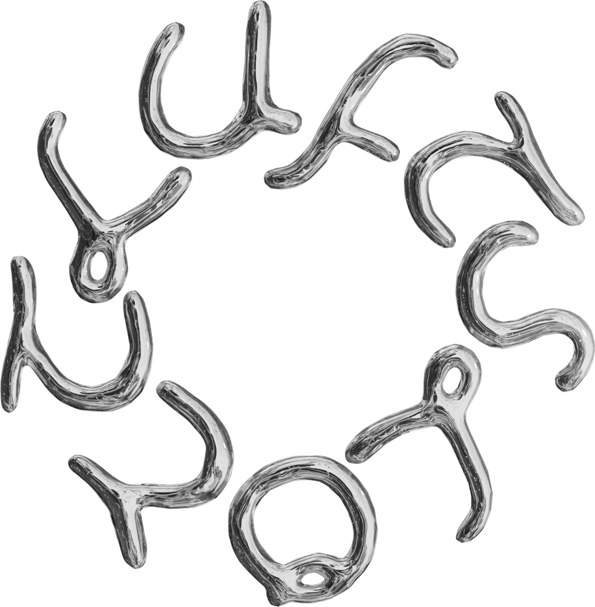

More projects
Recent projects, collaborations and experiments.

Pencil drawing, part of Poetry, a course at Beckmans.

Zine about my home town, A6.

Bleached T-shirt.

Logo and 3d render for Luftslott magazine.